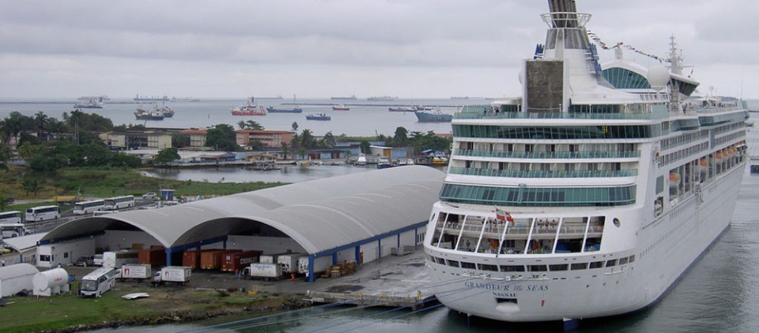
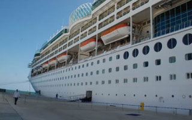
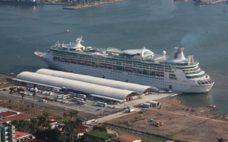
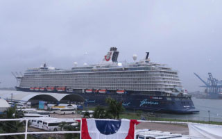
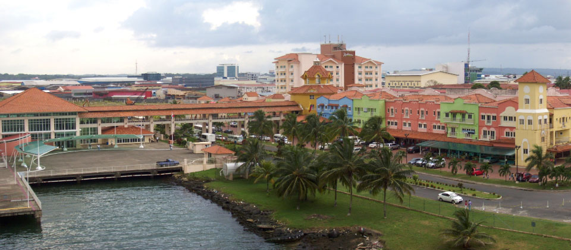
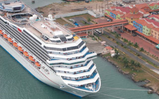
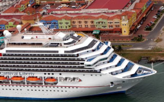
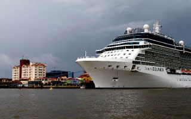
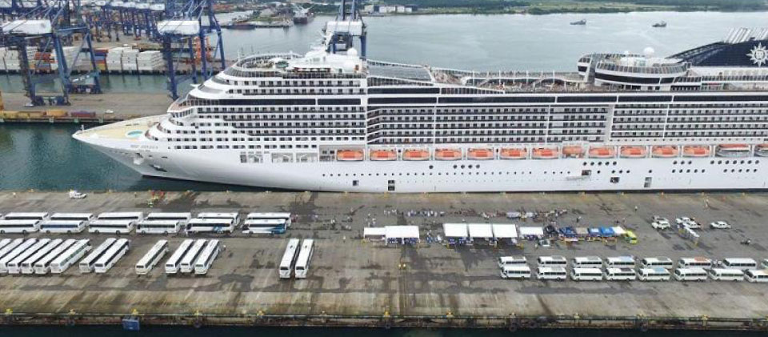

Puerto Home Port
El Terminal N°2, más bien conocido como el “Home Port” es un área de 61 839.08 mts. Cuadrados contruida de ladrillo y tejado de metal. Hay entradas para pasajeros, para equipaje y para carga general. Cada entrada está separada una de la otra..
|  |
|  |  |  |
Puerto Colon 2000
Inicia su operación en Octubre de 2000 con una Terminal con Muelle que en la actualidad corresponde al Terminal N°1 y se establece para proveer servicios a los Cruceros en viajes internacionales y para participar en el turismo de Panamá.
|  |
|  |  |  |
Puerto de Cristobal
El Puerto de Cristóbal ha estado operando comercialmente durante más de un siglo. Según la historia, los primeros muelles de madera construido en Cristóbal se remontan a 1851, cuando fueron diseñados para hacer desembarcar a los trabajadores y los materiales que se utilizarán para la construcción del Ferrocarril Transisthmian.
|  |